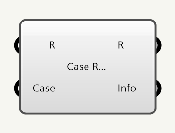

STEP BY STEP / 25 MINUTES
Apply the workflow to the roof rib.
Can the same sequence explain an architectural case?
Recognise the existing three-stage workflow, inspect five independent cases and explain a change in support reactions.
Files and starting point
Before starting: teaching archives contain the definition, not completed runtime jobs. Select the shared Rhino geometry where needed and run the required stages in order. Keep job folders in place for reports and case selection.
Build and observe
- Open the prepared roof Grasshopper model from the shared examples. Geometry is internalised; use the optional roof Rhino file for orientation, not as a required external selection.
- Locate Domain, Keep regions, supports, Material, Settings, the five Load Cases and the three calculation stages. Do not rebuild the entire roof definition in this 25-minute transfer exercise.
- Confirm the reference setup: span 6,000 mm; heel 300 mm plus rise 1,500 mm; thickness 12 mm; h = 100 mm; 630 active cells and 44 explicit Keep cells.
- Read the supports: left pin fixes X/Y; right anchored roller fixes Y and allows X. These are bilateral restraints and can develop hold-down tension under uplift.
- Inspect each named Load Case. Loads inside one case act together, including self-weight. Different cases are solved independently. Objective weight 1 is not a load factor.
- Check Gravity in World XY: cases 1 and 5 use (0, -9.80665, 0) m/s²; ULS snow cases 2–4 use 1.3g = (0, -12.748645, 0) m/s². X and Z are zero. Acceleration units are always m/s², while point loads here are in N.
- If time permits, run 01 BASELINE FEM → 02 OPTIMISATION → 03 FINAL VERIFICATION, waiting for completion between stages. Otherwise use the supplied reference table for the discussion and label it as reference evidence.
- Use Review Stage 0/1/2 to display baseline/design/verification. Stage changes the visible result, not which solver is run. Use Case 1–5 only after completion to inspect saved case responses.
- Use Field = 1 for displacement or Field = 2 for stress. Field 0 means FEM stress in stages 0/2, but design density in stage 1. Set a shared positive legend maximum for comparisons of the same physical field.
- Read the final SLS displacement and the wind-uplift reactions. Explain why a lighter plate may require greater downward hold-down force.
- Choose one controlled group variation only if time remains. Record the changed parameter; do not mix its result into the supplied reference table as though it were the same model.
Follow the data
| From | To / meaning |
|---|---|
| Loads acting together + Gravity L | One named Load Case L |
| Five independent Case outputs | Engineering Cases list |
| Review Stage outputs | Result viewer Preview inputs |
| Review Case | Case Result Case input |
| Review Field | Matching result viewers Field input |
Understand the result
This is a short transfer exercise adapted from the repository’s existing roof course. The supplied actions and combination coefficients are fixed teaching assumptions, not site-specific design inputs. No new regulation review is implied.
The six roof stations each represent 3 m² of horizontal tributary area. The SLS teaching force is -(0.15 + 0.60 + 0.80) × 3 = -4.65 kN per station; convert to -4,650 N for the model. Full-plate self-weight is about 5.81985 kN, giving about +16.85993 kN vertical reaction at each support under the symmetric SLS case.
At the reference h = 100 mm, Volume = 0.30 and Threshold = 0.40. Filter radius is 180 mm, entered as 180/h = 1.8 cells. Reference optimisation converged after 36 iterations. Refining the same binary shape to 50 and 25 mm raises peak stress substantially; this sequence does not demonstrate converged peak stress.
Existing roof reference — h = 100 mm
Fixed teaching assumptions: steel, 12 mm thickness, Volume 0.30, Threshold 0.40. Values below come from the existing roof course reference.
| Metric | Full plate | Density design | Binary plate |
|---|---|---|---|
| Mass (kg) | 593.460 | 178.038 | 199.704 |
| SLS maximum U (mm) | 0.446785 | 2.455073 | 1.229039 |
| Left-snow ULS peak stress (MPa) | 39.794733 | 74.499572 (relaxed) | 57.027307 |
| Uplift reaction per support (kN) | -4.920073 | Read case report | -6.850786 |
On the same binary shape, refinement h = 100 → 50 → 25 mm gives SLS U ≈ 1.2290 → 1.4521 → 1.5787 mm, while peak stress rises ≈ 57.03 → 86.64 → 141.16 MPa. The peak has not converged. These are grid-study observations, not a complete design acceptance.
Components in this lesson





These are native Grasshopper capsule renderings of the actual components, not screenshots of a running solve.
Checkpoint
- You identified five independent cases and the three calculation stages.
- You distinguished thickness, cell size and tributary spacing.
- You can explain the sign of uplift reactions.
- You label supplied values as reference unless you reproduced them.